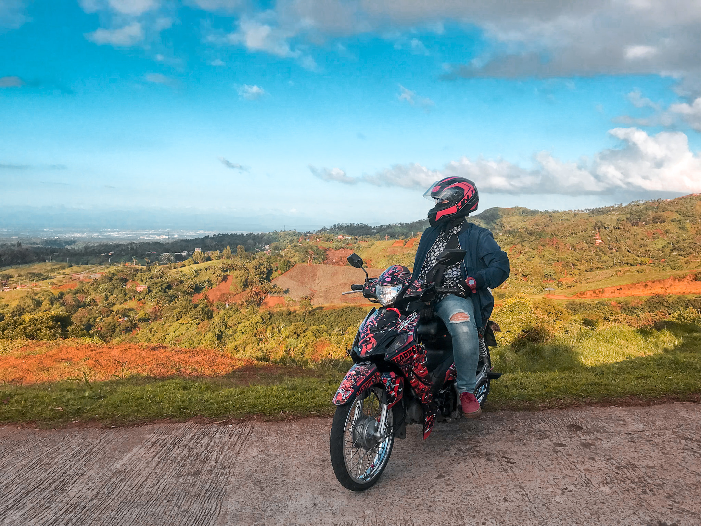
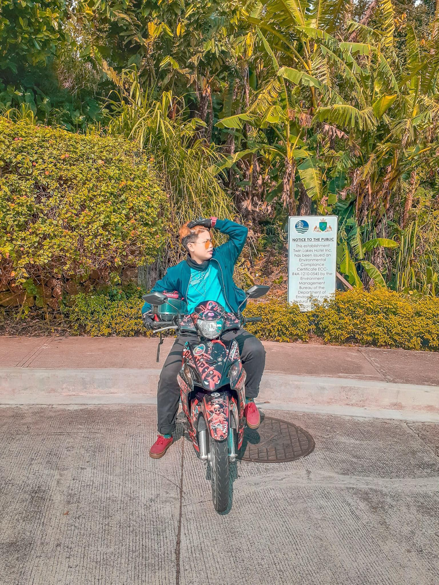

Welcome to my journey! I am creating this blog to tell stories from my rides and to take you also in every place I've been.
This is not totally a ride, but I took a picture because of the amazing view in Iruhin East. This when we went to my friend birthday and I have the chance to somehow escape from reality because of this stunning nature.
This photo took when we go to Kaybiang Tunnel after school. I have no last subject and I decided to take my girl here. Sudden ride creates good memories!
This photo is taken when we drop by in twin lakes on our way to Kaylaway Batangas for our first college swimming.
